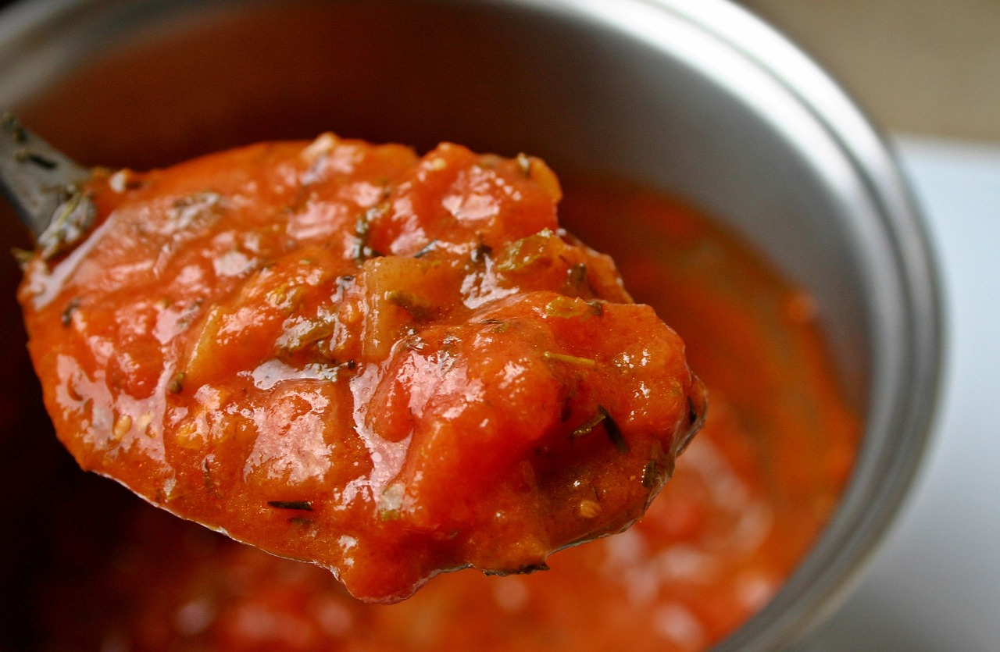

How to do a simple filetto sauce!
To do this, we are gonna need:
- 1 Kilogram of onions.
- 1 Kilogram of carrots.
- A Big can of triturated tomato (8 kilograms).
- 2 Lids of oregano.
- 2 Lids of provencal.
- 1 Lid of ground chili.
- Salt.
- Sugar.

- First of all, we are gonna cut the carrots, the little they are, the better. Same thing with the onions.
- Put the vegetables in a pot with a cup of water. Just to sauté them. Do this, stirring them, for fifteen minutes.
- When they are a bit golden, put the entire can of tomato on the pot, with 4 liters of water.
- Add the condiments, the oregano, provencal and the ground chili. After that, salt and sugar to taste. Keep stirring
- When the carrots are soft (prick the carrot with a knife), with a big mixer, mix the sauce until creamy.
- Enjoy the large amount of sauce!
This sauce is pretty basic, so you can add more vegetables at the beggining, or more seasonings with the oregano!